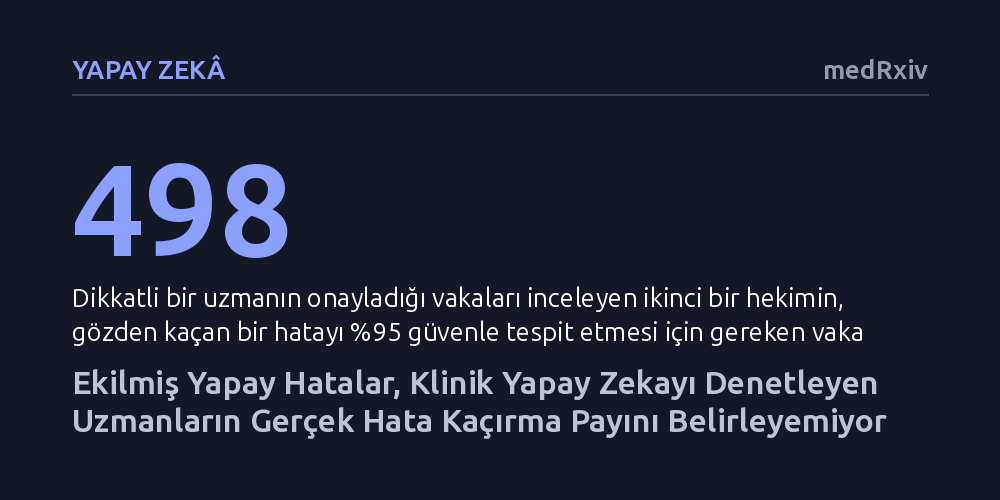

YAPAY-ZEKA · medRxiv · 2026-10-14
Yapay zeka yanıtlarını denetleyen uzmanların gözden kaçırdığı klinik hataları ölçmek için araya sahte kusur ekleme yönteminin güvenilirliği incelendi. Araştırma, bu testlerin denetçilerin gerçek hata kaçırma oranını belirleyemediğini ve yapay zekaya verilen güvenlik sertifikalarını yanıltıcı biçimde iyimser kıldığını ortaya koydu.
Klinik yapay zekaların güvenlik sertifikalarında insan denetçilerin hatasız kabul edilemeyeceğini ve standart testlerin bu denetim zaafını gizleyerek tehlikeli bir sahte güvence ürettiğini gösterir.

Sağlık alanında kullanılacak yapay zeka sistemlerinin güvenilirliği, aldıkları klinik kararların ne kadar sıklıkla hatalı olabileceğini garanti eden 'dağılımdan bağımsız risk kontrolü' yöntemleriyle belgelenir. Bu sertifikasyon sürecinde temel referans, yapay zekanın ürettiği yanıtların insan uzmanlar tarafından tek tek kontrol edilmesidir. Sistem, bu insan denetiminden geçen vakalar üzerinden kalibre edilir ve klinik yönetimi değiştirebilecek tehlikeli kusurların belirli bir eşiğin altında kalacağı matematiksel olarak taahhüt edilir.
Ancak buradaki kritik sorun, insan denetçinin kusursuz bir altın standart olmamasıdır. Üstelik insan denetçinin yaptığı hatalar çift yönlü değil, tek yönlü işler: Bir hekim yapay zekanın ürettiği tehlikeli bir kusuru fark edemeyip gözden kaçırdığında, o hatalı vaka sisteme 'tamamen güvenli' etiketiyle kaydedilir. Bu tek taraflı hatalı sınıflandırma, yapay zekanın tüm çalışma eşiklerindeki kayıtlı riskini yapay biçimde düşürür. Sonuç olarak verilen güvenlik sertifikası, denetçinin sistem hatalarını kaçırma oranına bağlı olarak tehlikeli derecede aşırı iyimser ve yanıltıcı hale gelir.
Denetçilerin hata kaçırma payını ölçmek için geleneksel kalite kontrolde sıkça başvurulan yöntem 'ekilmiş sondalar' kullanmaktır. Bu yöntemde denetçinin önüne gizlice, önceden bilinen yapay hatalar yerleştirilir ve denetçinin bunların ne kadarını yakalayabildiği sayılarak bir başarı oranı çıkarılır. Araştırmacılar, bu yerleşik yaklaşımın yapay zeka sistemlerinin kendi ürettiği doğal kusurların kaçırılma oranını tespit etmekte tamamen yetersiz kaldığını gösterdi.
Bunun temel nedeni 'saptanabilirlik' sorunudur. Bir uzmanın kusuru kaçırma olasılığı, o kusurun ne kadar bariz ya da ne kadar gizli olduğuna bağlıdır. Araya yerleştirilen yapay hataların saptanabilirlik düzeyini testi hazırlayan mühendis seçer; oysa yapay zeka sisteminin kendi ürettiği hataların saptanabilirliğini önceden kimse belirlemez. Yapay bir testteki kaçırma oranını modelin kendi hatalarına dönüştürmek için zaten ilk başta aranan gerçek kaçırma oranını bilmek gerekir. Sitoloji alanındaki saha doğrulamalarında kullanılan ekilmiş sondalar yalnızca gerçek hata oranına bir alt sınır çizebilir; bu da bir sertifikayı reddetmeye yarasa bile geçerli olduğunu kanıtlamaya yetmez.
Mevcut istatistiksel etiket gürültüsü düzeltmeleri, denetçi hatasının vakanın içeriğinden bağımsız olduğunu varsayar. Oysa pratikte insan denetçiler en çok 'akla yatkın görünen' hataları gözden kaçırır. Araştırmacıların incelediği dört simüle denetçi profilinin tamamında bu bağımsızlık varsayımı çökmüştür. Bu koşulun geçerliliğini bağımsız bir örneklemde test etmek bile devasa bir maliyet gerektirir: Kusurların yüzde 85'ini kaçıran dikkatsiz bir denetçi için 185 hakemli vaka yeterliyken, kusurların yalnızca yüzde 3'ünü kaçıran titiz bir denetçide bu koşulu doğrulamak için 147.938 vaka gerekmektedir.
Araştırma, kamuya açık bir veri setinde yapay zeka yanıtlarındaki en az yirmi akran onaylı kusuru puanlayan 17 hekimin gerçek inceleme verilerini analiz ettiğinde bu tablonun sahada da geçerli olduğunu kanıtladı. Hekimlerin kusurları gözden kaçırma oranları arasındaki fark, basit bir örnekleme rastlantısıyla açıklanamayacak kadar büyüktü; farklılığın yüzde 63'ü hekimlerin kendi gerçek performans farkından kaynaklanıyordu. Hekimlerin gerçek hata kaçırma oranlarının orta dilimi yüzde 7,5 ile yüzde 47,9 gibi son derece geniş bir banda yayılıyordu. Bu durum, bir uzmanın hata payının bir başka uzmana aktarılamayacağını net biçimde ortaya koydu.
Elde edilen bulgular, insan denetçilerin performansını karmaşık matematiksel gürültü modelleriyle düzeltmeye çalışmanın hem istatistiksel olarak çıkmaz sokak olduğunu hem de fahiş maliyetler yarattığını gösteriyor. Bunun yerine araştırmacılar doğrudan ikinci bir okuyucu yaklaşımını öneriyor. Dikkatli bir denetçinin onay verip geçtiği vakaları inceleyen bağımsız ikinci bir uzman, gözden kaçan bir kusuru yüzde 95 güvenle sadece 498 vaka içinde yakalayabilmektedir. Yani gürültüyü modellemeye çalışmak yerine doğrudan gürültüyü aramak çok daha düşük maliyetlidir.
Bu durum, sağlıkta yapay zeka kullanımına onay veren düzenleyici kurumlar ve hastane yönetimleri için doğrudan bir uyarı niteliğindedir. Bir yapay zekanın klinik hata yapma riskini sertifikalandırırken, kontrolü yapan hekimlerin de hata yapabileceği gerçeği hesaba katılmalıdır. Yapay testlerle elde edilen yüzeysel güvenceler yerine, denetimden geçen vakaların çoklu bağımsız uzmanlarca doğrudan örneklenmesi klinik güvenliğin tek gerçek garantisidir.